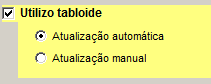
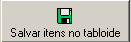
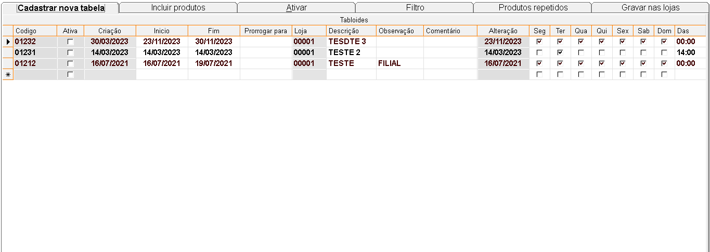
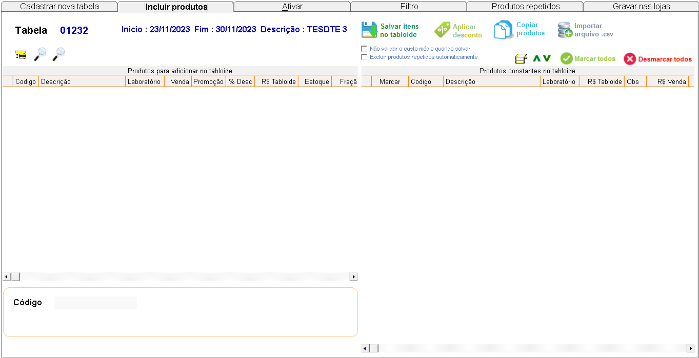
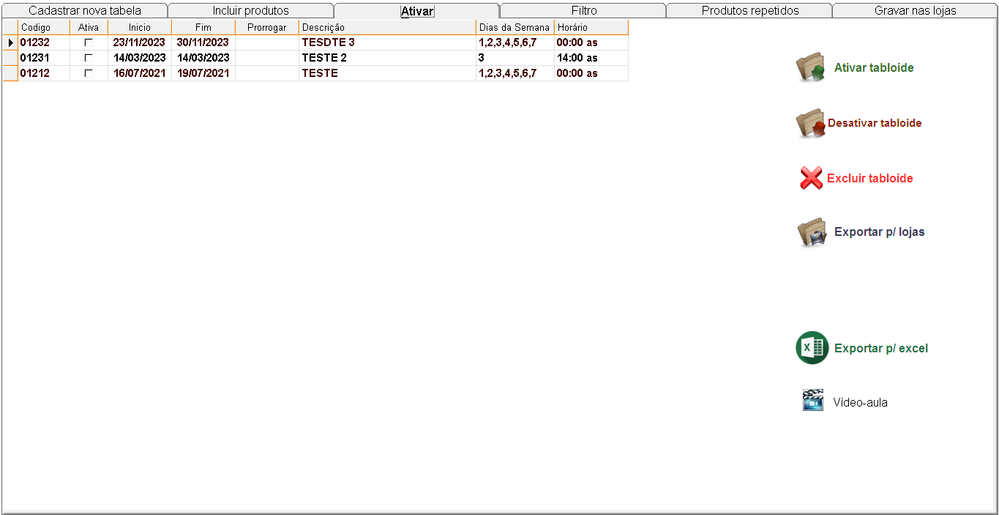

É uma tabela criada para conceder descontos em vários produtos por um determinado período. Aperte no
topico que deseja para conhecer a funcionalidade de cada opção.
+Qual o procedimento para cadastrar um tabloide?
No sistema:
- No menu utilitários, clique em parâmetros, na aba vendas informe se utiliza tabloide e como será a
atualização desse tabloide, manual ou automática.

- Atualização automática: No período inicial / final do tabloide, o primeiro
computador que acessar o sistema ativa / desativa o tabloide.
- Atualização manual: É necessário entrar no cadastro do tabloide para ativar /
desativar.
- Clique em salvar (F10) e reinicie o sistema.
- Acesse o tabloide, clique na linha em branco e informe os dados da tabela que deseja incluir. Tecle
ENTER até a próxima linha para salvar.
- Selecione a tabela e clique na aba incluir produtos.
- Obs.: As informações do período inicial / final e descrição da tabela estarão no
topo da tela.
- Selecione os produtos que vão para o tabloide, clicando em
 e informe o valor que o produto custará pelo tabloide,
depois clique em
e informe o valor que o produto custará pelo tabloide,
depois clique em 
- Incluídos os produtos, clique na aba ativar, selecione a tabela e clique na opção desejada.
OBS.: As informações sobre cada campo estão no final da página.
+Como alterar os dados de um tabloide?
- O tabloide deve estar desativado para que possa fazer as alterações. Selecione o tabloide em questão
e faça as alterações.
- Se houver alterações nos produtos, clique em salvar itens no tabloide. Após as alterações, ative o
tabloide.
+É possível excluir o tabloide?
- Sim, mas deve-se atentar ao seguinte detalhe:
- Se o tabloide estiver ativo, a exclusão não será permitida.
+Descrição dos campos do cadastro de tabloide:

- Código: Gerado automaticamente pelo sistema.
- Ativa: Indica se a tabela está ativa ou não.
- Criação: Informa a data de criação da tabela.
- Início: Informe a data de início do tabloide.
- Fim: Informe a data final do tabloide.
- Prorrogar para: Informe uma data, caso queira prorrogar esse tabloide por mais um
período.
- Loja: Apresenta a loja que está executando o tabloide.
- Descrição: Informe uma descrição para o tabloide.
- Observação: Informe caso tenha alguma observação referente ao tabloide.
- Comentário: Informe caso tenha algum comentário referente ao tabloide.
- Alteração: Caso haja alguma alteração no tabloide, será mostrada a data.
+Descrição dos campos para incluir itens no tabloide:

- Selecione o tabloide criado na tela anterior e note que aparecerão no topo da tela as datas de
início, fim e o nome do tabloide.
- Clique em para
realizar um filtro dos produtos e clique em OK.
- Selecione os produtos, e com um duplo clique no mouse, eles serão inseridos no tabloide. Informe o
valor que o produto custará no tabloide.
- Inseridos todos os produtos, clique em
+Tela para ativar-desativar-excluir no tabloide:

- Para ativar / desativar ou excluir um tabloide, selecione o tabloide e clique na operação
desejada.
- Obs.: Se nos parâmetros do sistema estiver selecionada a opção de
atualização automática, não é necessário ativar/desativar o tabloide.